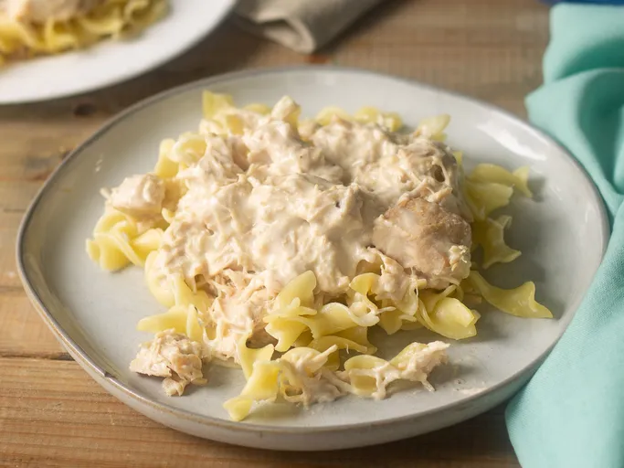

Slow Cooker Chicken Stroganoff

This chicken stroganoff is so good and so easy to make in the slow cooker on a busy day. It is a simple, creamy sauce with cubed chicken breast. Serve over hot cooked rice or pasta.
Ingredients
- 4 skinless, boneless chicken breast halves - cubed
- ⅛ cup butter
- 1 (.7 ounce) package dry Italian-style salad dressing mix
- 1 (10.5 ounce) can condensed cream of chicken soup
- 1 (8 ounce) package cream cheese
Directions
- Gather all ingredients.
- Put chicken, butter, and dressing mix in a slow cooker.
- Mix together well and cook on Low for 5 to 6 hours.
- Add condensed soup and cream cheese. Mix together and cook on High until heated through and warm, about 30 minutes.
- Serve and enjoy!
Home